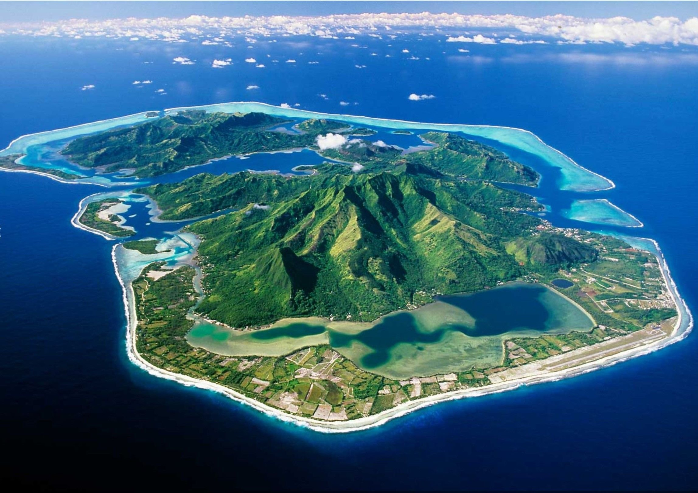
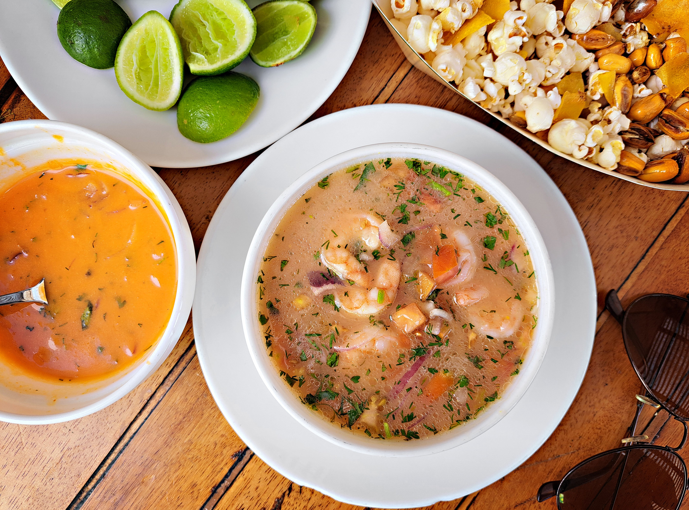
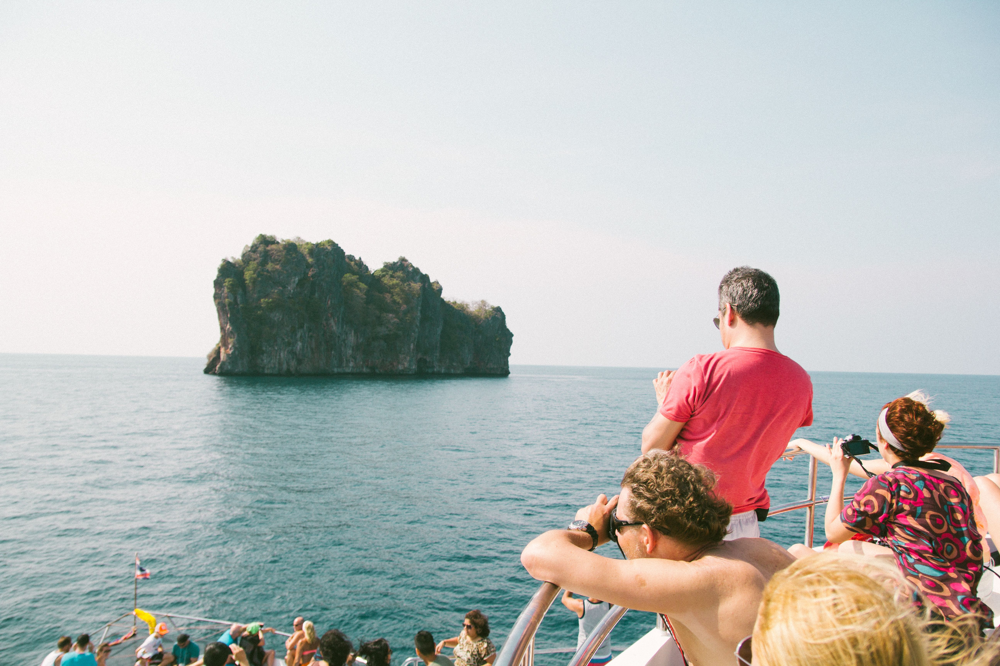

Lodging
Find the perfect island rest, from a cozy budget stay to a four-star beachfront retreat.
Stay →Discover your new favorite getaway at one of the most iconic and lush islands in the Pacific Ocean.
Explore Taniti
Taniti is a small, tropical island in the Pacific. While the island has an area of less than 500 square miles, the terrain is varied and includes both sandy and rocky beaches, a small but safe harbor, lush tropical rainforests, and a mountainous interior that includes a small, active volcano. Taniti has an indigenous population of about 20,000. Until a recent increase in tourism, most the Tanitian economy was dominated by fishing or agriculture.
Find the perfect island rest, from a cozy budget stay to a four-star beachfront retreat.
Stay →

Beaches, jungles, and local night life. Taniti offers much to explore. Start planning your itinerary.
Experience →

Quick answers about currency, power outlets, and everything else you need to know before you go.
Learn →